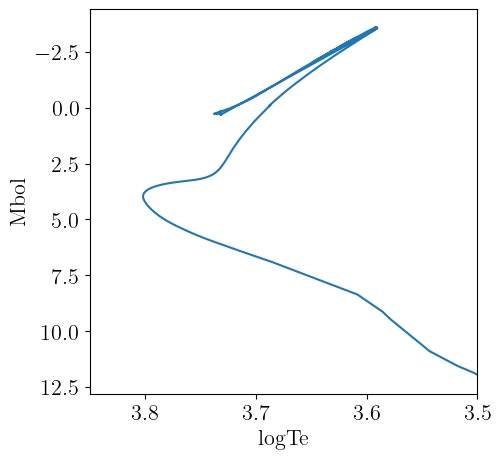
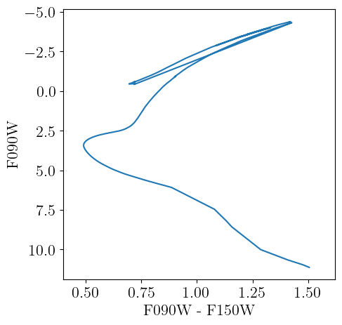

PARSEC
Here we describe the interface we provide to the PARSEC v1.2S library of stellar evolutionary tracks. PARSEC specific code is housed in the PARSEC submodule, which can be accessed as
using StellarTracks.PARSEC # load all exported methods
using StellarTracks.PARSEC: PARSECLibrary, X, Y, Z # load specific methodsThe main paper describing the PARSEC family of stellar models is Bressan et al. [2], but the library of stellar models has been expanded over the years to add and improve coverage of various parameter spaces. A non-exhaustive list of papers presenting the PARSEC models up to V1.2S is provided below.
- Bressan et al. [2] is the first paper presenting the PARSEC models.
- Chen et al. [3] presented an improved calibration for low-mass stars.
- Tang et al. [4] and Chen et al. [5] presented new models of high-mass stars from 14 to 350 M⊙ with metallicities from $0.001 \le Z \le 0.004$.
- Rosenfield et al. [6] formulated equivalent evolutionary points (EEPs) for the PARSEC models to support use in isochrone interpolation routines. Our implementation uses their data products.
- Marigo et al. [7] augmented the PARSEC models with COLIBRI models of the thermally pulsating asymptotic giant branch phase (TP-AGB).
- Pastorelli et al. [8] and Pastorelli et al. [9] compared the COLIBRI TP-AGB models to observations of the SMC and LMC, respectively.
The full list of relevant papers maintained by the group is available here.
As we use the PARSEC V1.2S tracks augmented with EEP points by Rosenfield et al. [6], we do not currently support the more recent PARSEC V2.0 tracks [10, 11]. We hope to add V2.0 in the future, but doing so would require new measurements of the EEP points which we do not presently support.
Data Acquisition
This package handles downloading and pre-processing of the EEP tracks produced by Rosenfield et al. [6] (available here) using DataDeps.jl. The main access point we provide is PARSECLibrary, which will load and make available the full library of stellar tracks. The first time you call this method, you will be prompted to download the required data files. The total data volume is ~150 MB after processing. Information on customizing the install location is available here. The data can be uninstalled by running using DataDeps; rm(datadep"PARSECv1.2S"; recursive=true). With all the tracks available, we are able to perform operations like interpolating isochrones at any age and metallicity within the PARSEC parameter space.
Examples
First we load the full PARSEC library, which is downloaded via DataDeps.jl if not already available.
using StellarTracks.PARSEC
p = PARSECLibrary()Structure of interpolants for PARSEC v1.2S library of stellar tracks. Valid range of metal mass fraction Z is (0.0001, 0.06).Now we use the PARSEC.PARSECLibrary to interpolate an isochrone at log10(age [yr]) = 10.05 and logarithmic metallicity [M/H]=-1.234. The isochrone is returned as a NamedTuple.
iso = isochrone(p, 10.05, -1.234)(eep = [382, 383, 384, 385, 386, 387, 388, 389, 390, 391 … 1691, 1692, 1693, 1694, 1695, 1696, 1697, 1698, 1699, 1700], m_ini = [0.10470838453210772, 0.11346615399489429, 0.12141494503974119, 0.1476116432023678, 0.26754725895285036, 0.31627928509282827, 0.417229589756538, 0.5602039333313518, 0.5875834503166119, 0.6076426027413548 … 0.8416692855805862, 0.8416700065148508, 0.841670678284074, 0.8416713343728077, 0.8416719940849534, 0.8416726614110694, 0.8416733607533659, 0.841674119638167, 0.8416750121877057, 0.8416759038111868], logTe = [3.4963632491169654, 3.503466250661142, 3.517905438669158, 3.543076349280766, 3.5784767265729127, 3.585752752989909, 3.6083816461577616, 3.6850810124891065, 3.701533547176789, 3.713499417335039 … 3.6216046189602524, 3.6210723519744454, 3.617811476176141, 3.614356173708984, 3.610753382420231, 3.607175867197186, 3.603405746565357, 3.5995353792646516, 3.5910687495714995, 3.5918984977820987], Mbol = [12.041058526240848, 11.854746357144123, 11.552441266940345, 10.894405832297902, 9.463522808240416, 9.122715024017301, 8.357039010179042, 6.911459626077072, 6.6300744806301095, 6.426863612940677 … -2.808743420601062, -2.8236609971709936, -2.9131371093559535, -3.00719950610396, -3.103785574145315, -3.200564039427967, -3.3015338252286384, -3.4045918004679683, -3.6121534101243866, -3.6024501277156027], logg = [5.295569635711925, 5.276057185564504, 5.24495279672587, 5.173999482422967, 5.002618898267627, 4.966206882458146, 4.87104653297904, 4.72901717673165, 4.702969484162427, 4.6841305975632395 … 0.7667793844194705, 0.7591389499167225, 0.7102487161244679, 0.6586536950889385, 0.6055529748952523, 0.55249431880778, 0.49694593166639583, 0.44017312296891586, 0.3170232860505606, 0.32933800010951225], C_O = [0.0, 0.0, 0.0, 0.0, 0.0, 0.0, 0.0, 0.0, 0.0, 0.0 … 0.0, 0.0, 0.0, 0.0, 0.0, 0.0, 0.0, 0.0, 0.0, 0.0])The NamedTuple returned by isochrone can be converted to table types, like TypedTables.Table to simplify further use.
using TypedTables: Table
Table(iso)Table with 6 columns and 1315 rows:
eep m_ini logTe Mbol logg C_O
┌──────────────────────────────────────────────
1 │ 382 0.104708 3.49636 12.0411 5.29557 0.0
2 │ 383 0.113466 3.50347 11.8547 5.27606 0.0
3 │ 384 0.121415 3.51791 11.5524 5.24495 0.0
4 │ 385 0.147612 3.54308 10.8944 5.174 0.0
5 │ 386 0.267547 3.57848 9.46352 5.00262 0.0
6 │ 387 0.316279 3.58575 9.12272 4.96621 0.0
7 │ 388 0.41723 3.60838 8.35704 4.87105 0.0
8 │ 389 0.560204 3.68508 6.91146 4.72902 0.0
9 │ 390 0.587583 3.70153 6.63007 4.70297 0.0
10 │ 391 0.607643 3.7135 6.42686 4.68413 0.0
11 │ 396 0.64003 3.73359 6.07577 4.64659 0.0
12 │ 397 0.652839 3.7405 5.9511 4.63321 0.0
13 │ 398 0.661233 3.74483 5.87009 4.62391 0.0
14 │ 399 0.668411 3.74847 5.80106 4.61563 0.0
15 │ 400 0.674166 3.75114 5.74417 4.60801 0.0
16 │ 401 0.673951 3.75155 5.74099 4.6074 0.0
17 │ 402 0.675114 3.75216 5.72906 4.60579 0.0
⋮ │ ⋮ ⋮ ⋮ ⋮ ⋮ ⋮The theoretical isochrone is plotted below.
We can load a grid of bolometric corrections from BolometricCorrections.jl to add observational magnitudes to the theoretical isochrone. In this example, we use the MIST bolometric correction grid, which offers bolometric corrections for varying metallicities ([M/H]) and reddening values ($A_V$).
Because the solar metallicity calibrations of PARSEC and MIST are not exactly the same, the protostellar metal mass fraction $Z$ that corresponds to a given [M/H] is not the same between the two libraries. The isochrone interface will convert the given [M/H], which is assumed to be the desired metallicity in the stellar track library, to its corresponding metal mass fraction, and then convert from the metal mass fraction to the correct [M/H] for the assumed chemical model of the bolometric correction grid.
This method returns a TypedTables.Table that contains the information from both sources. Here we evaluate an isochrone with log10(age [yr]) = 10.05, [M/H]=-1.234, and $A_v=0.02$ mag.
using BolometricCorrections.MIST: MISTBCGrid
m = MISTBCGrid("JWST")
iso = isochrone(p, m, 10.05, -1.234, 0.02)Table with 35 columns and 1315 rows:
eep m_ini logTe Mbol logg C_O F070W F090W ⋯
┌───────────────────────────────────────────────────────────────────
1 │ 382 0.104708 3.49636 12.0411 5.29557 0.0 12.4229 11.1256 ⋯
2 │ 383 0.113466 3.50347 11.8547 5.27606 0.0 12.1874 10.9561 ⋯
3 │ 384 0.121415 3.51791 11.5524 5.24495 0.0 11.7798 10.6596 ⋯
4 │ 385 0.147612 3.54308 10.8944 5.174 0.0 10.9335 10.0086 ⋯
5 │ 386 0.267547 3.57848 9.46352 5.00262 0.0 9.32403 8.56468 ⋯
6 │ 387 0.316279 3.58575 9.12272 4.96621 0.0 8.95683 8.22212 ⋯
7 │ 388 0.41723 3.60838 8.35704 4.87105 0.0 8.11785 7.45789 ⋯
8 │ 389 0.560204 3.68508 6.91146 4.72902 0.0 6.53228 6.07956 ⋯
9 │ 390 0.587583 3.70153 6.63007 4.70297 0.0 6.23595 5.8179 ⋯
10 │ 391 0.607643 3.7135 6.42686 4.68413 0.0 6.03014 5.63499 ⋯
11 │ 396 0.64003 3.73359 6.07577 4.64659 0.0 5.68508 5.32678 ⋯
12 │ 397 0.652839 3.7405 5.9511 4.63321 0.0 5.56443 5.21866 ⋯
13 │ 398 0.661233 3.74483 5.87009 4.62391 0.0 5.4886 5.15004 ⋯
14 │ 399 0.668411 3.74847 5.80106 4.61563 0.0 5.42397 5.09153 ⋯
15 │ 400 0.674166 3.75114 5.74417 4.60801 0.0 5.37035 5.04243 ⋯
16 │ 401 0.673951 3.75155 5.74099 4.6074 0.0 5.36768 5.04046 ⋯
17 │ 402 0.675114 3.75216 5.72906 4.60579 0.0 5.35649 5.03029 ⋯
⋮ │ ⋮ ⋮ ⋮ ⋮ ⋮ ⋮ ⋮ ⋮ ⋱All available columns in the isochrone can be obtained with TypedTables.columnnames.
using TypedTables: columnnames
columnnames(iso)(:eep, :m_ini, :logTe, :Mbol, :logg, :C_O, :F070W, :F090W, :F115W, :F140M, :F150W2, :F150W, :F162M, :F164N, :F182M, :F187N, :F200W, :F210M, :F212N, :F250M, :F277W, :F300M, :F322W2, :F323N, :F335M, :F356W, :F360M, :F405N, :F410M, :F430M, :F444W, :F460M, :F466N, :F470N, :F480M)A color-magnitude diagram constructed from the isochrone is plotted below.
Chemistry API
We provide the StellarTracks.PARSEC.PARSECChemistry type that follows the chemistry API defined in BolometricCorrections.jl to access information on the chemical mixture assumed for the PARSEC models.
StellarTracks.PARSEC.PARSECChemistry — TypePARSECChemistry()Returns a singleton struct representing the PARSEC chemical mixture model. We presently only include scaled-solar models. The solar protostellar chemical mixture for PARSEC was calibrated to reproduce solar photospheric observations via a forward modeling approach (see section 3 of Bressan et al. [2]). The full solar calibration assumed for PARSEC is given in Table 3 of Bressan et al. [2]. The distribution of heavy metals is taken from Grevesse and Sauval [12] and Caffau et al. [13] (see section 4 of Bressan et al. [2]).
julia> using StellarTracks.PARSEC: PARSECChemistry, X, Y, Z, X_phot, Y_phot, Z_phot, MH;
julia> chem = PARSECChemistry();
julia> X(chem) + Y(chem) + Z(chem) ≈ 1 # solar protostellar values
true
julia> X_phot(chem) + Y_phot(chem) + Z_phot(chem) ≈ 1 # solar photospheric values
true
julia> MH(chem, Z(chem) * 0.1) ≈ -1.0265716016323736
true
julia> Z(chem, -1.0265716016323736) ≈ Z(chem) * 0.1
trueNote that in our conversions between $Z$ and [M/H], remembering that MH = log10(Z/X) - log10(Z⊙/X⊙), we use the protostellar solar values for Z⊙ and X⊙ (these are Z_initial and X_initial = 1 - Z_initial - Y_initial in Table 4 of Bressan et al. [2]). We do this as $X$ and $Z$ for the PARSEC tracks also refer to the protostellar chemical composition of the stars – photospheric metallicities are not generally uniform due to diffusive properties that can redistribute the metals in a star over time. It therefore seems proper for Z⊙ and X⊙ to be the solar protostellar values rather than the present-day photospheric values. Our definition differs from the standard PARSEC convention – for example, Table 4 of Bressan et al. [2] and the online CMD webform for PARSEC isochrones both assume Z⊙/X⊙ = 0.0207 when computing [M/H], which is the photospheric result of Caffau et al. [13]. As such, it is expected that our MH function will correspond to a different value of Z than these sources. To facilitate comparisons, we provide the following functions to convert between $Z$ and [M/H] using the PARSEC convention – i.e., these functions will return the same $Z$ for a given value of [M/H] as found in Table 4 of Bressan et al. [2] and as returned by the CMD webform.
StellarTracks.PARSEC.MH_canon — FunctionMH_canon(mix::PARSECChemistry, Zval)Returns the [M/H] value for the provided protostellar value of Z, where the solar abundances are taken to be photospheric rather than protostellar, while the provided Zval is assumed to be protostellar. This matches the convention of Table 4 of Bressan et al. [2] and the CMD webform for PARSEC.
julia> using StellarTracks.PARSEC: PARSECChemistry, MH_canon;
julia> MH_canon(PARSECChemistry(), 0.0005) ≈ -1.4921252963659897
trueStellarTracks.PARSEC.Z_canon — FunctionZ_canon(mix::PARSECChemistry, MHval)Returns the protostellar metal mass fraction corresponding to the provided value of [M/H] where the solar abundances are taken to be photospheric rather than protostellar. This matches the convention of Table 4 of Bressan et al. [2] and the CMD webform for PARSEC.
julia> using StellarTracks.PARSEC: PARSECChemistry, Z_canon;
julia> Z_canon(PARSECChemistry(), -1.4921252963659897) ≈ 0.0005
trueLibrary API
StellarTracks.PARSEC.PARSECLibrary — TypePARSECLibrary()PARSECLibrary implements the AbstractTrackLibrary interface for the PARSEC stellar evolution library. If you construct an instance as p = PARSECLibrary(), it is callable as
p(Z::Number)to interpolate the full library to a new metal mass fraction (returning aPARSECTrackSet), orp(Z::Number, M::Number)to interpolate the tracks to a specific metallicity and initial stellar mass (returning aPARSECTrack).
This type also supports isochrone construction (see isochrone).
Examples
julia> p = PARSECLibrary()
Structure of interpolants for PARSEC v1.2S library of stellar tracks. Valid range of metal mass fraction Z is (0.0001, 0.06).
julia> isochrone(p, 10.05, -0.76) isa NamedTuple
trueStellarTracks.isochrone — Methodisochrone(p::PARSECLibrary, logAge::Number, mh::Number)Interpolates properties of the stellar tracks in the library at the requested logarithmic age (logAge = log10(age [yr])) and logarithmic metallicity mh. Returns a NamedTuple containing the properties listed below:
eep: Equivalent evolutionary pointsm_ini: Initial stellar masses, in units of solar masses.logTe: Base-10 logarithm of the effective temperature [K] of the stellar model.Mbol: Bolometric luminosity of the stellar model.logg: Surface gravity of the stellar model calculated as-10.616 + log10(mass) + 4 * logTe - (4.77 - Mbol) / 2.5.C_O: Photospheric C/O ratio (the ZAMS value is used before the TP-AGB).
The full library is principally a set of PARSECTrackSets, with one track set per unique chemical composition. All PARSEC models have scaled-solar chemical compositions, so they vary only in total metallicity (i.e., $Z$).
Track Set API
StellarTracks.PARSEC.PARSECTrackSet — TypePARSECTrackSet(zval::Number)PARSECTrackSet implements the AbstractTrackSet interface for the PARSEC stellar evolution library.
julia> ts = StellarTracks.PARSEC.PARSECTrackSet(0.0001)
TrackSet with Y=0.248678, Z=0.0001, 1930 EEPs and 104 initial stellar mass points.
julia> ts(1.01) # Interpolate track at new initial mass
PARSECTrack with M_ini=1.01, MH=-2.278223981363725, Z=0.0001, Y=0.248678, X=0.7512220000000001.
julia> isochrone(ts, 10.0) isa NamedTuple # Interpolate isochrone at `log10(age [yr]) = 10`
trueIndividual Tracks API
StellarTracks.PARSEC.PARSECTrack — TypePARSECTrack(zval::Number, mass::Number)PARSECTrack implements the AbstractTrack interface for the PARSEC stellar evolution library.
Note that due to the organization of the PARSEC data files, this method requires constructing a PARSECTrackSet and is therefore not efficient if your aim is to construct multiple tracks of the same metallicity zval. In this case, you should construct a PARSECTrackSet and call it with the masses you want, e.g., ts = PARSECTrackSet(0.0001); ts.([0.12, 0.15]).
julia> track = StellarTracks.PARSEC.PARSECTrack(0.0001, 0.15)
PARSECTrack with M_ini=0.15, MH=-2.278223981363725, Z=0.0001, Y=0.248678, X=0.7512220000000001.
julia> track(7.0) # interpolate track at log10(age [yr]) = 7
(logTe = 3.6015066653099757, Mbol = 8.518315848633081, logg = 4.464972304683626, C_O = 0.0)PARSEC References
This page cites the following references:
- [2]
- A. Bressan, P. Marigo, L. Girardi, B. Salasnich, C. Dal Cero, S. Rubele and A. Nanni. PARSEC : stellar tracks and isochrones with the PAdova and TRieste Stellar Evolution Code. MNRAS 427, 127–145 (2012).
- [3]
- Y. Chen, L. Girardi, a. Bressan, P. Marigo, M. Barbieri and X. Kong. Improving PARSEC models for very low mass stars. MNRAS 444, 2525–2543 (2014).
- [4]
- J. Tang, A. Bressan, P. Rosenfield, A. Slemer, P. Marigo, L. Girardi and L. Bianchi. New PARSEC evolutionary tracks of massive stars at low metallicity: testing canonical stellar evolution in nearby star-forming dwarf galaxies. MNRAS 445, 4287–4305 (2014). Accessed on Mar 24, 2024. ADS Bibcode: 2014MNRAS.445.4287T.
- [5]
- Y. Chen, A. Bressan, L. Girardi, P. Marigo, X. Kong and A. Lanza. PARSEC evolutionary tracks of massive stars up to 350 M⊙ at metallicities 0.0001 ≤ Z ≤ 0.04. MNRAS 452, 1068–1080 (2015). Accessed on Mar 24, 2024. ADS Bibcode: 2015MNRAS.452.1068C.
- [6]
- P. Rosenfield, P. Marigo, L. Girardi, J. J. Dalcanton, A. Bressan, B. F. Williams and A. Dolphin. Evolution of Thermally Pulsing Asymptotic Giant Branch Stars. V. Constraining the Mass Loss and Lifetimes of Intermediate-mass, Low-metallicity AGB Stars. ApJ 822, 73 (2016). Accessed on Aug 24, 2024. ADS Bibcode: 2016ApJ...822...73R.
- [7]
- P. Marigo, L. Girardi, A. Bressan, P. Rosenfield, B. Aringer, Y. Chen, M. Dussin, A. Nanni, G. Pastorelli, T. S. Rodrigues, M. Trabucchi, S. Bladh, J. Dalcanton, M. A. Groenewegen, J. Montalbán and P. R. Wood. A New Generation of PARSEC-COLIBRI Stellar Isochrones Including the TP-AGB Phase. ApJ 835, 77 (2017). Accessed on Aug 21, 2024. ADS Bibcode: 2017ApJ...835...77M.
- [8]
- G. Pastorelli, P. Marigo, L. Girardi, Y. Chen, S. Rubele, M. Trabucchi, B. Aringer, S. Bladh, A. Bressan, J. Montalbán, M. L. Boyer, J. J. Dalcanton, K. Eriksson, M. A. Groenewegen, S. Höfner, T. Lebzelter, A. Nanni, P. Rosenfield, P. R. Wood and M.-R. L. Cioni. Constraining the thermally pulsing asymptotic giant branch phase with resolved stellar populations in the Small Magellanic Cloud. MNRAS 485, 5666–5692 (2019). Accessed on Mar 24, 2024. ADS Bibcode: 2019MNRAS.485.5666P.
- [9]
- G. Pastorelli, P. Marigo, L. Girardi, B. Aringer, Y. Chen, S. Rubele, M. Trabucchi, S. Bladh, M. L. Boyer, A. Bressan, J. J. Dalcanton, M. A. Groenewegen, T. Lebzelter, N. Mowlavi, K. L. Chubb, M.-R. L. Cioni, R. de Grijs, V. D. Ivanov, A. Nanni, J. T. van Loon and S. Zaggia. Constraining the thermally pulsing asymptotic giant branch phase with resolved stellar populations in the Large Magellanic Cloud. MNRAS 498, 3283–3301 (2020). Accessed on Mar 24, 2024. ADS Bibcode: 2020MNRAS.498.3283P.
- [10]
- C. Nguyen, G. Costa, L. Girardi, G. Volpato, A. Bressan, Y. Chen, P. Marigo, X. Fu and P. Goudfrooij. PARSEC V2.0: Stellar tracks and isochrones of low- and intermediate-mass stars with rotation. Astronomy & Astrophysics 665, A126 (2022), arXiv:2207.08642 [astro-ph.SR].
- [11]
- G. Costa, K. Shepherd, A. Bressan, F. Addari, Y. Chen, X. Fu, G. Volpato, C. Nguyen, L. Girardi, P. Marigo, A. Mazzi, G. Pastorelli, M. Trabucchi, D. Bossini and S. Zaggia. Evolutionary tracks, ejecta, and ionizing photons from intermediate-mass to very massive stars with PARSEC. Astronomy & Astrophysics 694, A193 (2025), arXiv:2501.12917 [astro-ph.SR].
- [12]
- N. Grevesse and A. Sauval. Standard Solar Composition. Space Science Reviews 85, 161–174 (1998).
- [13]
- E. Caffau, H.-G. Ludwig, M. Steffen, B. Freytag and P. Bonifacio. Solar Chemical Abundances Determined with a CO5BOLD 3D Model Atmosphere. Solar Physics 268, 255–269 (2011).